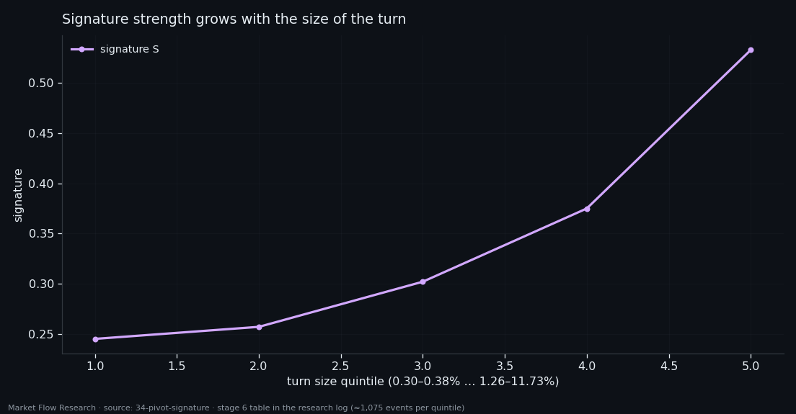
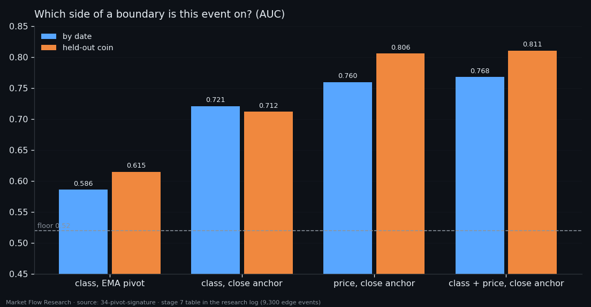

Where a Leg Really Ends — Four Events Earlier Than the Zigzag Says
We went looking for a unique, universal signature of a pivot in 531 legs of six coins. The book turned out to be a mirror — tops and bottoms read with one ruler once buyer and seller features swap. The zigzag's pivot turned out to sit in the wrong place: the true boundary of a leg is the extreme of the closing price within ±25 events, four events earlier, and there the signature becomes symmetric and one event sharp. What we did not find is uniqueness: a 0.5% correction carries the same signature, weaker. The signature measures the strength of a turn — not whether the leg is over.
① A mirror, and a boundary in the wrong place
The goal was a pivot signature that is both unique — present only at leg boundaries — and universal — the same for rises and falls. The class is `210×10-1×7d/d`, whose features come in buyer/seller pairs, measured over 531 whole legs of six coins with 465 continuous joints.
First, the mirror. If the series is mirror-symmetric, the signature of a top must equal the signature of a bottom with the pairs swapped. It does, to within 0.02–0.05 of rank against an effect of 0.15–0.25; tops are louder than bottoms by the same small margin. So all 531 legs can be measured with one ruler.
Second, where the boundary is. The zigzag's pivot sits on an EMA-10 of the opening price, and an EMA lags. Four anchors were tried. At the raw EMA pivot the signature is 0.366, peaks four events before the pivot, and its profile is lopsided (left/right 3.10). Anchored on the extreme of the closing price within ±25 events, it becomes 0.589, peaks exactly at the point, and turns symmetric (1.05). That boundary lies a median 4 events before the EMA pivot in 99% of legs (3–5.5 by coin), adds 0.17% to each leg's range, and puts the boundary in the top 10% of its own leg's events in 52% of legs, against 26% for the EMA pivot. This became the project's labelling standard: every zigzag, any threshold, is built on EMA-10 and then snapped to the close extreme within ±25 events.

② One event, and the last push is your own side
The user's hypothesis was that at the end of a rise, sellers overpower buyers, and the leg's end should be set so that this final burst lies inside it. The data confirm it with the order reversed. At the boundary the loudest side is the leg's own — the last push of buyers at a top (0.849), of sellers at a bottom (0.830). The opposing side overtakes it on the next event (+1), the same way up and down. So the end of a leg is the final burst of its own side, and the first event of the opposing side already belongs to the next leg — exactly what the close anchor produces.
A reversal is one event, not a zone: the signature is 0.619 at the point and 0.409 two events away. The ±15-event zones of earlier studies were the blur of the old labelling.
Direction the class takes mostly from price: beyond the event's own price move, the book adds +0.036 of rank (t +3.9) and nothing on ETH or SOL.

③ Not unique: a correction is a smaller boundary
Third, uniqueness — and here the answer is no. A 0.5% correction carries the same signature, weaker: boundary 0.589, correction 0.353, leg body −0.033; boundary against correction AUC 0.664. The signature grows with the size of the turn — from 0.245 in the smallest quintile to 0.533 in the largest (Spearman +0.236). It reads as turn strength, not "the leg is over". The mechanism of a correction is the same — own volume peaks, levels collapse, the other side overtakes at +1. The difference lives in the surroundings, not the burst (AUC 0.670 vs 0.509), and with turn size matched it disappears (91 pairs, difference −0.009, t −0.2). The last 10 events before the point separate them best (0.674), without any event of the next leg.
A final measurement asked, on 9,300 edge events: does this event belong to the ending leg or the new one? With the close anchor: 0.768 by date, 0.811 on a held-out coin. Price reads it; the class adds 0.008. But the anchor matters for the class: 0.586 → 0.721 when the boundary moves to the close extreme — the most direct measure of the new standard's value. And the earlier 0.877 of study 28 was inflated by the late pivot; on the exact boundary it is 0.768.
The measurement is conditional: the model is asked only on edge events, and finding the edge in the live series is a separate, poorly solved problem. A strong second link does not rescue a weak first one. The next study stops asking "is the leg over" and asks the network to see the whole leg at once.

Reproduce this study
- Research log (.md, Ukrainian): goal, data, plan, scripts, every confirmed stage and table — enough to rerun the study
- Reproduction kit (.zip): the study's scripts, project rules and base scripts that build every class
If this changed how you read the tape, the natural next step is Volume Is the Fuel — Not the Steering Wheel — We recorded the Binance order book every second for six coins over five months and ran eighteen tests on what volume really does.
Volume Is the Fuel — Not the Steering Wheel
We recorded the Binance order book every second for six coins over five months and ran eighteen tests on what volume really does.
About Market Research Lab — What We Collect and Why
Most market commentary is storytelling.
From Calm to Calm: a Standard for What Counts as a Signal (BTC)
We stopped defining market signals with a stopwatch.
The Wall That Goes Quiet: What Resting Liquidity Predicts
We measured resting limit liquidity sitting on both sides of the book second by second across six coins, and asked the only question that matters:….
Comments
Discussion is powered by GitHub. Enable it by adding secrets/giscus.json (repo IDs from giscus.app).